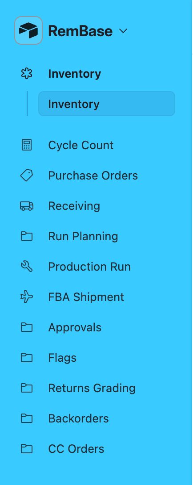
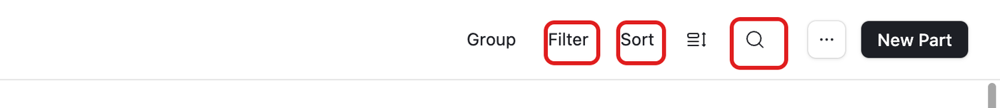
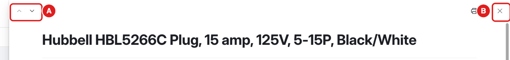

What this chapter is for
Every page in RemBase works the same way. Learn these few things once.
Pick a page
- Click a page name in the menu on the left.
- Some pages have smaller pages under them. Click the smaller page you need.

Find something in a list
Most pages show a list. The buttons at the top right help you find things.

- Click the magnifying glass (Search).
- Type a part number, a name or a PO number.
- The list now shows only matching rows.
- To see everything again, click the ✕ in the search box.
- Filter hides rows you do not need. It changes only your own view.
- Sort changes the order of the rows. It changes only your own view.
Open a record
- Click a row in the list. In some lists, point at the row and click the expand button (two small arrows).
- The record opens on the right side or in the middle.
On the Home pages (Home, Listings, Reports), you can also click a number tile. It opens the list of records behind the number, and each of those opens too. Most record pages are read-only. Where you can write something, the page shows a box for it (for example Your check or Your plan).
Move between records and close

- A – the arrows go to the previous or next record in the list.
- B – the ✕ closes the record.
White boxes and grey text
- A white box with a border is a field you can type in.
- Grey text or text with no box is read-only. The system fills it in.
- RemBase saves what you type by itself. There is no Save button. Click outside the box or press Tab when you finish.
Undo, history and comments
- Made a mistake while typing? Press Cmd+Z (Ctrl+Z on Windows) right away to undo it.
- Stock changes are always recorded in the Ledger: who entered them and when (receipts, counts, builds, reversals, shipments).
- On a PO line, Price/Qty changed by / at shows who last changed the price or quantity.
- For anything else, ask Adam. He can see the full history.
- Comments on a record are visible to everyone.
How to scan
RemBase Scan is a page for your phone. It shows what RemBase knows about an item or a bin. Ask Adam for the RemBase Scan bookmark. You sign in with your work Google account.
- Open the RemBase Scan bookmark.
- Scan a code in one of three ways:
- Pull the trigger on the Bluetooth scanner. You do not need to tap anything first.
- Tap the box and type the code. (TEST-BIN’s code is #9001#.)
- Tap Scan with camera.
- Read the result:
- An item shows its bins and how many are in each, its lots and expiration dates, and its open POs. A date in red expires in less than 90 days.
- A bin shows what is in it.
- Use the buttons:
- Open in Inventory opens the part in RemBase.
- Receive: PO … opens that PO line, so you can receive it.
- Count in a bin, or Count this bin, opens a count of that bin.
Until December 1, a count on a real bin is practice. The heading says Practice — nothing posted, and there is no Save button. Real counts stay in Fishbowl.
Practice count on TEST-BIN (phone):
- Scan TEST-BIN. Tap Count this bin.
- Scan each item. Each scan adds 1.
- If a line is right, tap Matches. To type a number, tap the line.
- Tap Finish. You see the differences.
- Tap Save count to RemBase and answer the question. It says Saved – posting. RemBase posts the stock changes next.
Messages you may see:
| Message | What to do |
|---|---|
| Not saved: stock moved while you counted | Count the bin again. |
| Recount needed – not saved | Count again, and choose the expiration date. |
| Not confirmed – tell Adam. Code … | Give Adam the code. |
| No connection… kept on this phone | Wait. It sends again by itself. |
| Keep this page open: this phone cannot store the count. | Keep the page open until it is saved. |
| Sign in again… | Sign in. The count waits for you. |
Common mistakes
- Typing in the wrong record. Check the title at the top before you type.
- Typing on a real part. Before December 1, type only on TEST items.
- Thinking a filter is gone. A number next to Filter or Sort means one is on. Click it to remove it.